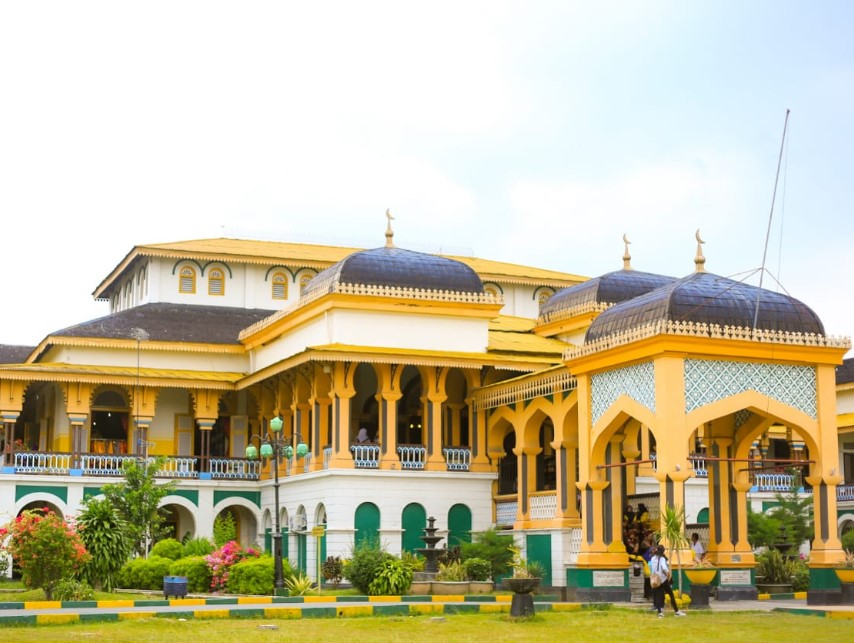

Sejarah

Kepulauan Sumatra adalah pulau keenam terbesar di dunia yang terletak di Indonesia Dengan luas 473.481 km2,
pulau ini turut didaulat sebagai pulau terbesar keenam di dunia. Tak hanya didapuk sebagai wilayah dengan kawasan yang luas, Pulau Sumatra juga dikenal akan keanekaragaman budaya, panorama alam, dan variasi kuliner yang sangat menarik, Sumatra paling terkenal dengan hutannya yang luas dan masih alami, danau kawah gunung berapi terbesar di dunia, Danau Toba, dan gunung berapi tertinggi di Indonesia, Kerinci (3.850 m)
Pulau Sumatera memiliki 10 provinsi yaitu
Aceh, Sumatera Utara, Sumatera Barat, Riau, Kepulauan Riau, Jambi, Bengkulu, Sumatera Selatan, Bangka Belitung, Lampung.
Budaya
Sebuah provinsi yang berada di bagian utara Pulau Sumatra, Indonesia.
Luas wilayah provinsi ini yakni 72.981,23 km2, dan ibu kota provinsi ini berada di Kota Medan.
Sumatera Utara merupakan provinsi dengan jumlah penduduk terbesar keempat di Indonesia, setelah Provinsi Jawa Barat, Jawa Timur, dan Jawa Tengah, dan terbanyak di Pulau Sumatera, dan yang terbanyak di luar Pulau Jawa.
Pada awal tahun 2025, penduduk Sumatera Utara berjumlah 15.785.839 jiwa, dengan kepadatan penduduk 216 jiwa/km
Alam
Kota ini merupakan kota terbesar keempat di Indonesia setelah DKI Jakarta, Surabaya, dan Bandung serta kota terbesar di luar Pulau Jawa, sekaligus kota terbesar di Pulau Sumatra
Medan berawal dari sebuah kampung yang didirikan oleh Guru Patimpus di pertemuan Sungai Deli dan Sungai Babura. Hari jadi Kota Medan ditetapkan pada 1 Juli 1590. Selanjutnya pada tahun 1632, Medan dijadikan pusat pemerintahan Kesultanan Deli, sebuah kerajaan Melayu.